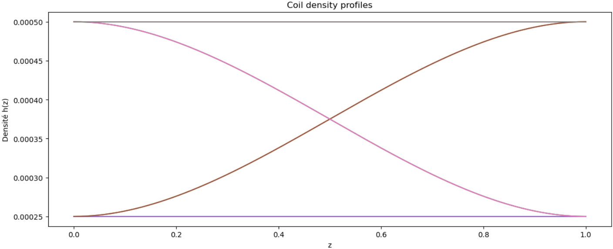

- 4 coils
- 1000 epochs
- MSE ~ 2e-4

L'objectif principal de cette étude est de pouvoir exprimer la relation de dispersion \( k(\omega) \) en tout point le long de l'axe des z à tout instant \( t \), sans qu'il y ait de dépendance vis-à-vis de \( r \). Cependant, un problème se pose : la valeur de \( \omega(t) \) le long de l'axe n'est pas connue à l'avance, ce qui complique l'analyse. Pour surmonter cette difficulté, la solution envisagée consiste à rechercher une relation entre \( k \) et \( \omega \) en chaque point de l'axe pour tous les \( \omega \) compris dans l'intervalle \([ \omega_{\text{min}}, \omega_{\text{max}} ]\). En d'autres termes, il s'agit d'ajuster \( k \) sur la grille définie par les axes \( z \) et \( \omega \), permettant ainsi une caractérisation précise de la relation de dispersion dans l'espace étudié. Un problème majeur rencontré est le coût élevé de cette méthode pour une grille de grande taille \( (r, z, t) \). Pour surmonter ce défi,* nous envisageons de remplacer le processus de FIT par un réseau de neurones.
Les dix coefficients \( (a_i)_{1\leq i \leq 10} \) sont présumés être des fonctions continues de \( z \). Il est donc possible de les interpoler le long de \( z \) avec \( n \) coefficients \( (q_j)_{1\leq j \leq n} \) (où \( n \) varie approximativement entre 5 et 20). Cette méthode nous permet d'obtenir un tableau de dimensions \( (10, n) \), facilitant le calcul de FIT et \( k_w\_grid \).
Le processus de construction de la base de données implique plusieurs étapes clés. Tout d'abord, nous fournissons à DoPPLIGHT les paramètres R et h. Après le calcul, nous enregistrons le FIT et interrompons le code. Ensuite, le code est exécuté pour une gamme variée de valeurs de paramètres. Finalement, les coefficients qjqj sont interpolés séparément à l'aide d'un script Python.
Pour la prédiction des coefficients d'interpolation, nous adoptons une approche novatrice. L'image ci-dessous illustre les valeurs de K dans le plan \( (k,w )\). Nous avons débuté par interpoler cette courbe avec un polynôme d'ordre 1 sous la forme \( p(ω,z)=a_1ω+a_2z+a_3 \), compte tenu de sa proximité avec un plan.
Figure : Interpolation de K dans le plan (k, w)
On trace l'Évolution des coefficients du polynôme en fonction du rayon R :
Figure : Évolution des coefficients du polynôme en fonction du rayon R
\( \hat{k_{\omega,2}}(z) = \frac{\hat{\omega}(z)}{v c} \left[ \frac{x_1 (\hat{\omega}(z) \omega_0)^5 + \ldots + x_6 v}{x_1 (\hat{\omega}(z) \omega_0)^5 + x_2 (\hat{\omega}(z) \omega_0)^4 + \ldots + x_6} \right] \)
Figure : Fit \(k(ω)\) pour chaque point de l'axe \(z\)
Face aux erreurs significatives rencontrées avec le réseau de neurones lors de la première approche, nous avons procédé à une transformation logarithmique de la troisième composante des données d'entrée (w), pour améliorer l'apprentissage du modèle. Cette technique a été appliquée en raison de la nature particulière de la distribution des valeurs de w, qui s'étend sur plusieurs ordres de grandeur. La transformation logarithmique permet d'atténuer l'effet des écarts extrêmes et de réduire l'hétéroscédasticité des données.
Cette transformation a eu un impact positif sur la performance du modèle, avec une réduction notable de la fonction de perte MSE de près de la moitié. Toutefois, une erreur conséquente persistait, menant à l'abandon de cette approche pour la suite du projet.
Les détails de la normalisation et de la transformation appliquées pour l'entrainement du modèle sont les suivants :
Normalisation des deux premières caractéristiques (aa et z) avec StandardScaler
scaler_inputs_12 = StandardScaler()
inputs_scaled_12 = scaler_inputs_12.fit_transform(inputs[:, :2])
Transformation non linéaire (logarithme) de la troisième caractéristique (w)
inputs_transformed_w = np.log(inputs[:, 2] + 1)
Combinaison des caractéristiques normalisées et transformées
inputs_transformed = np.hstack((inputs_scaled_12, inputs_transformed_w.reshape(-1, 1)))
Normalisation des sorties (outputs) avec MinMaxScaler
scaler_outputs = MinMaxScaler()
outputs_scaled = scaler_outputs.fit_transform(outputs.reshape(-1, 1))
Ci-dessous, l'image illustre l'erreur d'interpolation logarithmique observée après application de cette méthode :
.png)
Malgré la réduction de l'erreur, la persistance d'une erreur non négligeable a conduit à la recherche de méthodes alternatives pour améliorer davantage la précision du modèle.
Coupe (z, t) pour la valeur maximale de r de la grille pour une interpolation.
Coupe (z, t) de Er pour la valeur maximale de r de la grille pour un calcul DoPPLIGHT.
Dans cette approche, nous abordons le calcul des champs en examinant le fit \( k(\omega) \), utilisé principalement pour déterminer les champs électromagnétiques \( E \) et \( B \). Nous identifions que les coûts computationnels sont principalement dus au fit de \( k(\omega) \), et que calculer directement \( E \) et \( B \) peut être réalisé sans grande augmentation des coûts.
Notre objectif est de prédire les champs sans dépendre de la précision élevée nécessaire pour les petites valeurs de \( \omega \), en se concentrant sur les trois composantes \( (r, \theta, z) \).
Nous observons que l'amplitude du champ varie uniquement avec \( r \), étant nulle pour \( r=0 \) et augmentant strictement ensuite. À \( r \) fixé, le champ se propage comme une onde le long de \( z \) avec le temps.
Le modèle que nous proposons est le suivant :
où \( \alpha(0) = 0 \) et la dérivée \( \alpha'(r) \) est strictement positive, ce qui implique que l'amplitude du champ croît avec \( r \).
\( alpha(r) \) pour les 8 premiers cas de la base de donnée.
Interpolation de \( alpha(r) \) pour un polynôme de degré \( 7 \).
Distance en norme 2 entre la tranche du tableau \( E_r(r,z,t) \) et \( E_r(0,z,t) \) sur la grille \( (z,t) \).
Pour atteindre notre objectif de modélisation des champs, nous envisageons plusieurs méthodes :
Prédire l'image de champ à partir de r, a(z) et h(z).
Total : 620,546 paramètres.
\(E_r(z,t)\) (DoPPLIGHT)
\(E_r(z,t)\) (ELU Prediction)
(erreur Absolue)